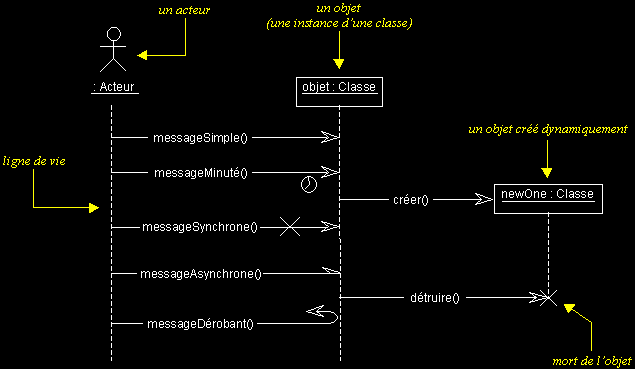
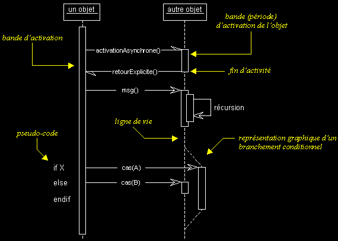
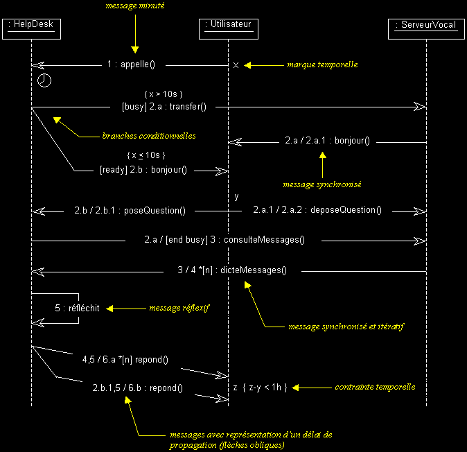

|
|
|
Les vues dynamiques d'UML (suite...)
DIAGRAMME DE SEQUENCE
q
Diagramme de séquence : sémantique
- Les diagrammes de séquences permettent de représenter des collaborations entre objets selon un point de vue temporel, on y met l'accent sur la chronologie des envois de messages.
- Contrairement au diagramme de collaboration, on n'y décrit pas le contexte ou l'état des objets, la représentation se concentre sur l'expression des interactions.
- Les diagrammes de séquences peuvent servir à illustrer un cas d'utilisation.
- L'ordre d'envoi d'un message est déterminé par sa position sur l'axe vertical du diagramme ; le temps s'écoule "de haut en bas" de cet axe.
- La disposition des objets sur l'axe horizontal n'a pas de conséquence pour la sémantique du diagramme.
- Les diagrammes de séquences et les diagrammes d'état-transitions sont les vues dynamiques les plus importantes d'UML.
Exemple :

q Types de messages
Comme vous pouvez le voir dans l'exemple ci-dessus, UML propose un certain nombre de stéréotypes graphiques pour décrire la nature du message (ces stéréotypes graphiques s'appliquent également aux messages des diagrammes de collaborations) :
- message simple
Message dont on ne spécifie aucune caractéristique d'envoi ou de réception particulière.
- message minuté (timeout)
Bloque l'expéditeur pendant un temps donné (qui peut être spécifié dans une contrainte), en attendant la prise en compte du message par le récepteur. L'expéditeur est libéré si la prise en compte n'a pas eu lieu pendant le délai spécifié.
- message synchrone
Bloque l'expéditeur jusqu'à prise en compte du message par le destinataire. Le flot de contrôle passe de l'émetteur au récepteur (l'émetteur devient passif et le récepteur actif) à la prise en compte du message.
- message asynchrone
N'interrompt pas l'exécution de l'expéditeur. Le message envoyé peut être pris en compte par le récepteur à tout moment ou ignoré (jamais traité).
- message dérobant
N'interrompt pas l'exécution de l'expéditeur et ne déclenche une opération chez le récepteur que s'il s'est préalablement mis en attente de ce message.
q Activation d'un objet
Sur un diagramme de séquence, il est aussi possible de représenter de manière explicite les différentes périodes d'activité d'un objet au moyen d'une bande rectangulaire superposée à la ligne de vie de l'objet.
On peut aussi représenter des messages récursifs, en dédoublant la bande d'activation de l'objet concerné.
Pour représenter de manière graphique une exécution conditionnelle d'un message, on peut documenter un diagramme de séquence avec du pseudo-code et représenter des bandes d'activation conditionnelles.
Exemple :

Commentaires :
- Ne confondez la période d'activation d'un objet avec sa création ou sa destruction. Un objet peut être actif plusieurs fois au cours de son existence (voir exemple ci-dessus).
- Le pseudo-code peut aussi être utilisé pour indiquer des itérations (avec incrémentation d'un paramètre d'un message par exemple).
- Le retour des messages asynchrones devrait toujours être matérialisé, lorsqu'il existe.
- Notez qu'il est fortement recommandé de synchroniser vos messages, comme sur l'exemple qui suit...
- L'exemple qui suit présente aussi une alternative intéressante pour la représentation des branchements conditionnels. Cette notation est moins lourde que celle utilisée dans l'exemple ci-dessus.
- Préférez aussi l'utilisation de contraintes à celle de pseudo-code, comme dans l'exemple qui suit.
q Exemple complet
Afin de mieux comprendre l'exemple ci-dessous, veuillez vous référer aux chapitres sur la synchronisation des messages. Notez aussi l'utilisation des contraintes pour documenter les conditions d'envoi de certains messages.

Commentaire :
Un message réflexif ne représente pas l'envoi d'un message, il représente une activité interne à l'objet (qui peut être détaillée dans un diagramme d'activités) ou une abstraction d'une autre interaction (qu'on peut détailler dans un autre diagramme de séquence).
|
|
|